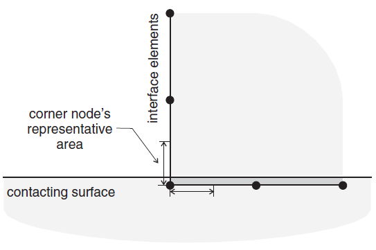
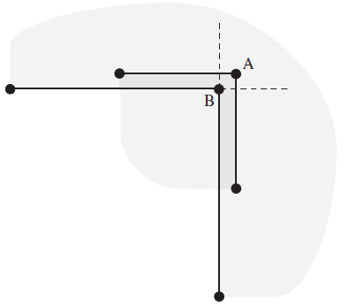
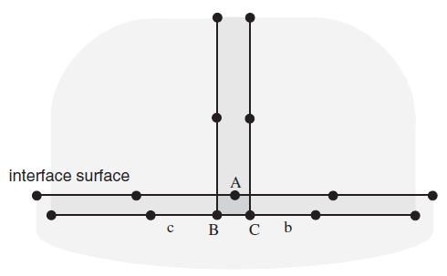

建模指南
故障排除
生成网格并添加接触面单元之后、修改网格使两面接触之前，应检查模型几何形状。应组合使用“网格单元”和“接触面”绘图项，并采用不同颜色，确认接触面单元放置在正确表面上。
将接触面两侧移至接触后，执行 执行计算时步命令（model step） 0 命令计算接触位置。应发出 zone interface i list information 命令，列出接触面 i 上所有接触节点的目标面，以及将力分配到目标面的权重系数。计算过程中，可用按法向应力或剪应力着色的“接触面”绘图项，监测沿接触面的剪应力和法向应力发展。请注意，未提供的接触面性质默认值为零。例如，法向应力为零可能表明未指定法向刚度。
初始应力
使用 initialize-stresses 关键字初始化网格应力时，接触面应力不会自动初始化。可以用 初始化界面节点应力命令（zone interface node initialize-stresses） 命令初始化接触面法向应力及剪应力向量分量。也可将含接触面的模型步进至初始平衡状态；达到初始状态后，可将位移设为零。
接触面角点
应特别注意会形成尖锐角点的接触面（见图 1（Figure 1））。角点处接触面节点的代表面积，是实际接触面积的两倍。如果只有底面会接触（如图所示），则仅应在该表面施加接触面单元。如果两个表面都会接触，应指定两个独立接触面。

图 1：接触面角点处的有效面积。
内凹角还存在另一问题（见图 2（Figure 2））。此时，接触面单元可放在 A 侧（朝向角内）或 B 侧（背向角内）。如果放在 A 侧，角点节点会移入不处于任一侧面“后方”的区域，因此无法检测到接触。应改为将接触面单元放在 B 侧。此外，应按图 1（Figure 1）所述，为角点两条边分别创建两个不同接触面。

图 2：内凹角处的接触面。
重叠接触面
接触面节点一次只能识别与一个面的接触，这可能在多个接触面相交区域造成问题（见图 3（Figure 3））。底面上的接触面节点 A 会与目标面 b 或 c 中的一个发生接触，具体由接触面指定顺序或舍入效应决定。这意味着网格点 B 或 C 中的一个不会识别适当接触及抵抗力，导致接触面连接处出现拱效应。一种解决方法是定义两个相向的接触面，各自采用整体一半的刚度和强度；另一种是增加该区域接触面节点数量。两种方法都可减轻问题，但可能无法消除。

图 3：重叠接触面的交汇。
接触面与流体流动
程序不模拟流体与接触面的完整相互作用。只要两表面接触，流体便可沿法向无阻力穿过接触面；不模拟接触面内部沿平行方向的流动。可通过 zone interface i permeability = 开启关闭（on/off） 命令，为接触面 i 开启或关闭该选项（默认为 开启（on））。如果已调用 配置流体计算模式（model configure fluid），使用 zone interface element 命令的 maximum-edge 关键字改变接触面单元尺寸，会自动使接触面不透水，即使此前已指定 permeability = 开启（on）。若希望流体穿过接触面，请勿指定 maximum-edge。
接触面节点流体压力可用于确定有效应力，以计算滑移或拉伸破坏条件，但流体不会对接触面两侧施加任何机械力。可用 zone interface i effective = 开启关闭（on/off） 命令，使接触面 i 分别按有效应力或总应力工作（默认为 开启（on））。节理运动与流体体积变化之间没有耦合。
小应变下的接触面与相互作用对象更换
以小应变模式运行的接触面通过比较两个相互作用面的“虚拟位置”来获得其力，其中点的虚拟位置是该点的原始坐标加上迄今累积的位移（displacement-small）。如果一个接触对象被移除（例如隧道内的充填体），并用同一接触面替换为另一个对象（例如安装衬砌），则可能出现很大的初始应力，因为接触面两侧看起来相互侵入，原因是旧对象的虚拟位置相对于新对象的指定位置已经改变。
使用 zone interface node 命令配合 displacement-small 关键字，可将与特定接触面 n 关联的已存储位移乘以系数 v。通常该系数为零，将组成接触面“宿主”的各面的虚拟位置恢复到原始位置。此时，如果新相互作用对象的坐标与接触面宿主面的原始坐标匹配，就不会产生初始应力。不过，也可将 v 设为非零值，以模拟两接触对象之间初始不吻合。
| 这些内容对您有帮助吗？… 版权与免责声明 |
FLAC3D © 2019, Itasca | 原文更新于 2020 年 10 月 8 日 |